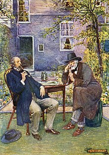
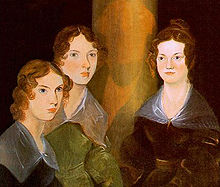
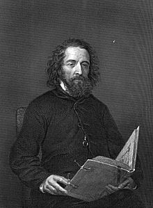
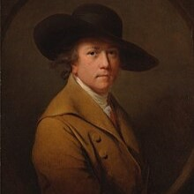
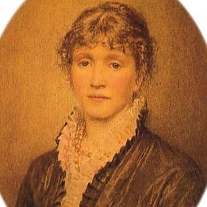
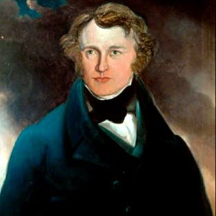
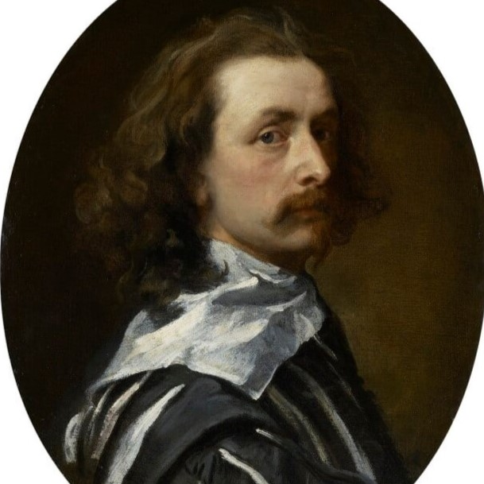
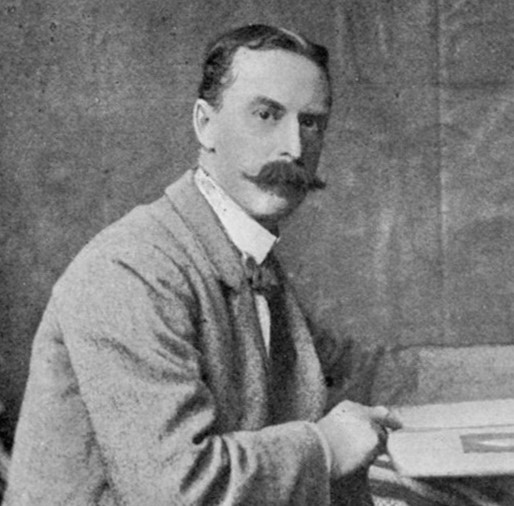

The Romantic period was a time of abstract expression and inward focus; during the Victorian era, writers focused on social issues. Writers such as Thomas Carlyle called attention to the dehumanizing effects of the Industrial Revolution and what Carlyle called the "Mechanical Age". This awareness inspired the subject matter of other authors, like poet Elizabeth Barrett Browning and novelists Charles Dickens and Thomas Hardy. Barrett's works on child labor cemented her success in a male-dominated world where women writers often had to use masculine pseudonyms. Dickens employed humor and an approachable tone while addressing social problems such as wealth disparity. Hardy used his novels to question religion and social structures.

Poetry and theatre were also present during the Victorian era. Robert Browning and Alfred Tennyson were Victorian England's most famous poets. With regard to the theatre it was not until the last decades of the 19th century that any significant works were produced. Notable playwrights of the time include Gilbert and Sullivan, George Bernard Shaw, and Oscar Wilde.
Prose fiction
Charles Dickens is the most famous Victorian novelist. With a focus on strong characterization, Dickens became extraordinarily popular in his day and remains one of the most popular and read authors of the world. Dickens began his literary career with Sketches by Boz (1833–1836) which collected short stories published in various newspapers and other periodicals. His first novel, The Pickwick Papers (1836–1837) written when he was twenty-five, was an overnight success, and all his subsequent works sold extremely well. The comedy of his first novel has a satirical edge and this pervades his writing. While at the beginning of the 19th century most novels were published in three volumes, monthly serialization was revived with the publication of Charles Dickens' Pickwick Papers in twenty parts between April 1836 and November 1837. Demand was high for each episode to introduce some new element, whether it was a plot twist or a new character, so as to maintain the readers' interest. Dickens worked diligently and prolifically to produce the entertaining writing that the public wanted, but also to offer commentary on social problems and the plight of the poor and oppressed. His most important works include Oliver Twist (1837–1839), Nicholas Nickleby (1838–1839), A Christmas Carol (1843), Dombey and Son (1846–1848), David Copperfield (1849–1850), Bleak House (1852–1853), Little Dorrit (1855–1857), A Tale of Two Cities (1859), and Great Expectations (1860–1861). His later novels become progressively darker, mirroring a tendency in much of Victorian writing.
William Makepeace Thackeray was Dickens' great rival in the first half of Queen Victoria's reign. With a similar style but a slightly more detached, acerbic and barbed satirical view of his characters, he also tended to depict a more middle-class society than Dickens did. He is best known for his novels The Luck of Barry Lyndon (1844) and Vanity Fair (1847–1848) which are examples of a popular form in Victorian literature: a historical novel in which recent history is depicted.

Charlotte, Emily, and Anne Brontë produced notable works of the period, although these were not immediately appreciated by Victorian critics. Wuthering Heights (1847), Emily's only work, is an example of Gothic Romanticism from a woman's point of view, which examines class, myth, and gender. Jane Eyre (1847), by her sister Charlotte, is another major Victorian novel with Gothic themes. Anne's second novel The Tenant of Wildfell Hall (1848), written in a realistic rather than romantic style, is mainly considered to be the first sustained feminist novel.
Elizabeth Gaskell produced notable works during this period, including Mary Barton (1848), Cranford (1851–1853), North and South (1854–1855), and Wives and Daughters (1864–1866).
George Eliot (Mary Ann Evans) also produced major works during this period, most notably Adam Bede (1859), The Mill on the Floss (1860), Silas Marner (1861), Middlemarch (1871–1872), and Daniel Deronda (1876). Like the Brontës she published under a masculine pseudonym.
Later in this period, Thomas Hardy's best-known novels are Far from the Madding Crowd (1874), The Mayor of Casterbridge (1886), Tess of the d'Urbervilles (1891), and Jude the Obscure (1895). Renowned for his cynical yet idyllic portrayal of pastoral life in the English countryside, Hardy's work pushed back against widespread urbanization that came to symbolize the Victorian age.
Other significant novelists of this era were Anthony Trollope (1815–1882), Wilkie Collins (1824-1889), George Meredith (1828–1909), and George Gissing (1857–1903).

Poetry
Robert Browning (1812–1889) and Alfred Tennyson (1809–1892) were notable poets in Victorian England.[9] Thomas Hardy wrote poetry throughout his life, but did not publish a collection until 1898. The poetry of Gerard Manley Hopkins (1844–1889) was published posthumously in 1918. Algernon Charles Swinburne (1837–1909) is also considered an important literary figure of the period, especially his poems and critical writings. Early poetry of W. B. Yeats was also published in Victoria's reign. It was not until the last decades of the 19th century that any significant theatrical works were produced, beginning with Gilbert and Sullivan's comic operas of the 1870s, George Bernard Shaw's (1856–1950) plays of the 1890s, and Oscar Wilde's (1854–1900) The Importance of Being Earnest.
Elizabeth Barrett Browning and Robert Browning became acquainted first by reading each other's poetry and both produced poems inspired by their relationship. Both Matthew Arnold and Gerard Manley Hopkins wrote poems that sit somewhere in between the exultation of nature of the romantic Poetry and the Georgian Poetry of the early 20th century. However, Hopkins's poetry was not published until 1918. Arnold's works anticipate some of the themes of these later poets, while Hopkins drew inspiration from verse forms of Old English poetry such as Beowulf.
The reclaiming of the past was a major part of Victorian literature with an interest in both classical literature and also medieval literature of England. This movement can be traced back to Letitia Elizabeth Landon and her poetry collections. Victorians loved chivalrous stories of knights of old; they hoped to regain some of that courtly behavior for readers at home and in the wider empire. The best example of this is Alfred Tennyson's Idylls of the King, which blended the stories of King Arthur, particularly those by Thomas Malory, with contemporary concerns and ideas. The Pre-Raphaelite Brotherhood also drew on myth and folklore for their art, with Dante Gabriel Rossetti contemporaneously regarded as the chief poet amongst them, although his sister Christina is now held by scholars to be a stronger poet.
Drama
In drama, farces, musical burlesques, extravaganzas and comic operas competed with Shakespeare productions and serious drama by the likes of James Planché and Thomas William Robertson. In 1855, the German Reed Entertainments began a process of elevating the level of (formerly risqué) musical theatre in Britain that culminated in the famous series of comic operas by Gilbert and Sullivan and were followed by the 1890s with the first Edwardian musical comedies. The first play to achieve 500 consecutive performances was the London comedy Our Boys by H. J. Byron, opening in 1875. Its astonishing new record of 1,362 performances was bested in 1892 by Charley's Aunt by Brandon Thomas. After W. S. Gilbert, Oscar Wilde became the leading poet and dramatist of the late Victorian period.[10] Wilde's plays, in particular, stand apart from the many now-forgotten plays of Victorian times and have a closer relationship to those of the Edwardian dramatists such as George Bernard Shaw, whose career began in the 1890s. Wilde's 1895 comic masterpiece, The Importance of Being Earnest, was the greatest of the plays in which he held an ironic mirror to the aristocracy while displaying virtuosic mastery of wit and paradoxical wisdom. It has remained extremely popular. The plays of Arthur Wing Pinero have been staged again in the last few decades.
Children's literature
The Victorians are credited with "inventing childhood", partly via their efforts to stop child labor and the introduction of compulsory education. As children began to be able to read, literature for young people became a growth industry, with not only established writers producing works for children (such as Dickens' A Child's History of England) but also a new group of dedicated children's authors. Writers like Lewis Carroll (Alice's Adventures in Wonderland), Anna Sewell (Black Beauty), and R. M. Ballantyne (The Coral Island) wrote mainly for children, although they had an adult following. Other authors such as Robert Louis Stevenson (Treasure Island) and Anthony Hope (The Prisoner of Zenda) wrote mainly for adults, but their adventure novels are now generally classified as for children. Other genres include nonsense verse, poetry which required a childlike interest (e.g. Lewis Carroll's "Jabberwocky"). School stories flourished: Thomas Hughes' Tom Brown's Schooldays and Kipling's Stalky & Co. are classics.
Rarely were these publications designed to capture a child’s pleasure; however, with the increase in the use of illustrations, children began to enjoy literature and were able to learn morals in a more entertaining way.[16] With the newfound acceptance of reading for pleasure, fairy tales and folk tales became popular. Compiling folk tales by many authors with different topics made it possible for children to read literature about many topics which interested them. There were different types of books and magazines written for boys and girls. Girls' stories tended to be domestic and to focus on family life, whereas boys' stories were more about adventures.

The influence of Victorian literature
Writers from the United States and the British colonies of Australia, New Zealand, and Canada were influenced by the literature of Britain and are often classed as a part of Victorian literature, although they were gradually developing their own distinctive voices. Victorian writers of Canadian literature include Grant Allen, Susanna Moodie and Catherine Parr Traill. Australian literature has the poets Adam Lindsay Gordon and Banjo Paterson, who wrote Waltzing Matilda, and New Zealand literature includes Thomas Bracken and Frederick Edward Maning. From the sphere of literature of the United States during this time are some of the country's greats including: Emily Dickinson, Ralph Waldo Emerson, Nathaniel Hawthorne, Oliver Wendell Holmes Sr., Henry James, Herman Melville, Harriet Beecher Stowe, Henry David Thoreau, Mark Twain and Walt Whitman.
The problem with the classification of "Victorian literature" is the great difference between the early works of the period and the later works which had more in common with the writers of the Edwardian period and many writers straddle this divide. People such as Arthur Conan Doyle, Rudyard Kipling, H. G. Wells, Bram Stoker, H. Rider Haggard, Jerome K. Jerome and Joseph Conrad all wrote some of their important works during Victoria's reign but the sensibility of their writing is frequently regarded as Edwardian.

William Turner
Joseph Mallord William Turner RA (23 April 1775 – 19 December 1851), known in his time as William Turner, was an English Romantic painter, printmaker and watercolourist. He is known for his expressive colouring, imaginative landscapes and turbulent, often violent marine paintings. He left behind more than 550 oil paintings, 2,000 watercolours, and 30,000 works on paper. He was championed by the leading English art critic John Ruskin from 1840, and is today regarded as having elevated landscape painting to an eminence rivalling history painting.

Joseph Wright
Joseph Wright ARA (3 September 1734 – 29 August 1797), styled Joseph Wright of Derby, was an English landscape and portrait painter. He has been acclaimed as "the first professional painter to express the spirit of the Industrial Revolution".

Helen Allingham
Helen Mary Elizabeth Paterson was born on 26 September 1848, at Swadlincote in Derbyshire, the daughter of Alexander Henry Paterson, a medical doctor, and Mary Herford Paterson. Helen was the eldest of seven children. The year after her birth the family moved to Altrincham in Cheshire. In 1862 her father and her three-year-old sister Isabel died of diphtheria during an epidemic. The remaining family then moved to Birmingham, where some of Alexander Paterson's family lived.

Patrick Branwell Bronte
Patrick Branwell Brontë (26 June 1817 – 24 September 1848) was an English painter and writer. He was the only son of the Brontë family, and brother of the writers Charlotte, Emily, and Anne. Brontë was rigorously tutored at home by his father, and earned praise for his poetry and translations from the classics. However, he drifted between jobs, supporting himself by portrait-painting, and gave way to drug and alcohol addiction, apparently worsened by a failed relationship with a married woman. Brontë died at the age of 31.

Anthony Van Dyck
Sir Anthony van Dyck (Dutch: Antoon van Dyck 22 March 1599 – 9 December 1641) was a Flemish Baroque artist who became the leading court painter in England after success in the Spanish Netherlands and Italy. Anthony painted from an early age. He was successful as an independent painter in his late teens and became a master in the Antwerp Guild on 18 October 1617.

Edmund Blair Leighton
Edmund Blair Leighton ROI (21 September 1852 – 1 September 1922) was an English painter of historical genre scenes, specialising in Regency and medieval subjects. His art is associated with the pre-Raphaelite movement of the mid-to-late nineteenth and early twentieth centuries.